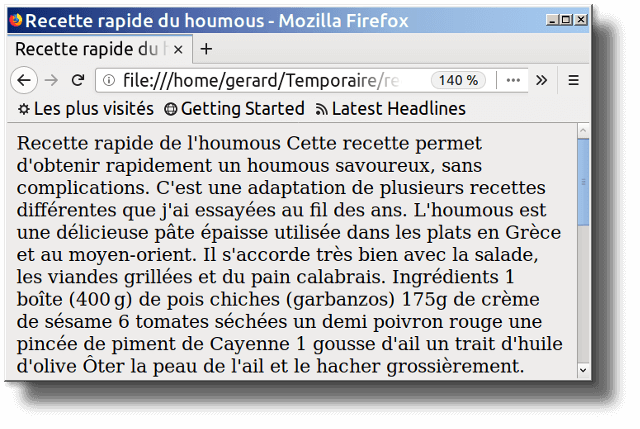
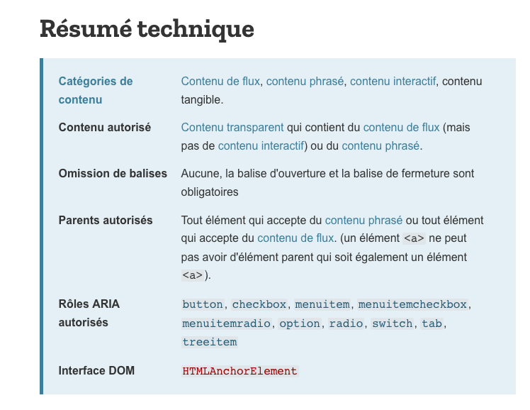
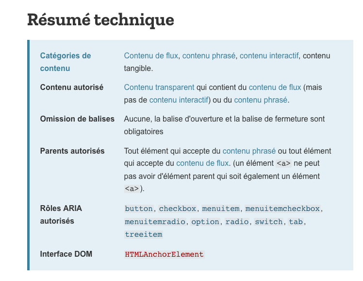

Le HTML(HyperText Markup Language) est un langage informatique utilisé pour representer les pages Web.Ce n’est pas un langage de programmation. La traduction littérale de l’anglais serait « langage de balisage d’hypertexte ». Ce langage tire son nom des hyperliens qu’il permet d’insérer dans du texte pour créer de l'hypertexte dont le contenu repose sur un langage de balisage.
HTML permet également de structurer sémantiquement et logiquement et de mettre en forme le contenu des pages, d’inclure des ressources multimédias, des formulaires de saisie et des programmes informatiques. Il permet de créer des documents interopérables avec des équipements très variés de manière conforme aux exigences de l’accessibilité du web. Il est souvent utilisé conjointement avec le langage de programmation JavaScript et des feuilles de style en cascade (CSS).
2 - Évolution de HTML dans son contexte historique
Durant la première moitié des années 1990, avant la naissance des technologies web, l'évolution de HTML a dicté l'évolution du World Wide Web. Depuis 1997 et HTML 4, l'évolution de HTML a fortement ralenti ; 10 ans plus tard, HTML 4 reste utilisé dans les pages web. En 2008, la spécification du HTML 5 est à l'étude.
2.1 - Origine
HTML est une des trois inventions à la base du World Wide Web, avec le HyperText Transfer Protocol (HTTP) et les adresses web, début des années 90. HTML a été découvert pour pouvoir écrire des documents hypertextuels,liant les différentes ressources d'Internet avec des hyperliens, nommés «page web».Cet HTML primitif contient déjà divers éléments comme le titre du document, les hyperliens, la structuration du texte en titres, sous-titres, listes ou texte brut. Tout est prêt mais il manque des instruments qui permettraient aux usagers de voir et consulter les pages - il fallait des navigateurs web.
2.2 - Premiers pas
L’état de HTML correspond alors à ce que l’on pourrait appeler HTML 1.0. Il n’existe cependant aucune spécification portant ce nom, notamment parce que le langage est alors en pleine évolution. Un effort de normalisation est alors initié. De nombreux éléments de présentation (attributs de texte, clignotement, centrage, etc.) vont être définis et implémentes par différents navigateurs au fur et à mesure. Malgré l'effort de normalisation initié, et jusqu'à la fin des années 1990, HTML est essentiellement défini par les implémentations des navigateurs. C’est ainsi que nait le besoin de standardisation.
2.3 - Standardisation du web : W3C
Pour accompagner l’évolution technologique divergente, le W3C (World Wide Web Consortium) , un organisme de normalisation sans but lucratif fondé en 1994 aura pour mission de promouvoir des normes ouvertes et d'assurer la compatibilité des technologies du Web. Au début de 1997, le W3C publie la norme HTML 3.2 qui décrit la pratique courante en 1996, un ramassis de ce que les navigateurs web du moment peuvent faire. Il contient des éléments en prévision du support des styles et des scripts.HTML 4.0 suit peu après à la fin de 1997 et apporte différentes améliorations pour l’accessibilité des contenus dont principalement la possibilité d’une séparation plus explicite entre structure et présentation du document. HTML 4.01, une révision de HTML 4.0, entre ensuite en vigueur en 1999.
2.4 - 1997 – 2007 : Révolution technologique vs. Stagnation des standards
Évolution ou révolution ? HTML5, la future version, attise autant la curiosité, l’envie, que la méfiance. Il est le successeur de HTML4, normalisé parle W3C. Le Web est donc resté plus d’une décennie sans évolution de son standard fondateur, une éternité durant laquelle les sites ont évolué, parfois de manière non standard. Pendant ce temps, le W3C s’est d'abord focalisé sur XHTML 1.0 (la XML-isation de HTML 4), XHTML 1.1 (la même chose modularisée et qui n'intéresse quasiment personne) et surtout XHTML 2 en 2001.Le HTML était laissé sur le bord de la route, tous les retours sur HTML4 et même les demandes d'harmonisation avec des standards plus récents (la programmation objet (DOM) par exemple) étaient rejetées. Certaines personnes, mécontentes de l’inertie du W3C et du temps que prenait le développement de nouveaux standards et qui voyaient du potentiel dans le HTML ont alors décidé de continuer son évolution en formant un groupe nommé le WHATWG. Ce comité sera activement soutenu par Mozilla, Google, Apple et Opera.
Naissance de WHATWG et HTML5
Cree en 2004, le comité WHATWG va permettre de relancer le développement du format HTML et répondre aux nouveaux besoins sur une base technologique jugée plus facilement implémentable que celle du XHTML 2.0 en cours de conception. Ceci s'inscrit dans le contexte d'une contestation plus générale du mode de fonctionnement du W3C, connu trop fermé par une partie des développeurs et designers web.En mars 2007, tirant la conséquence des réticences d'une partie de l'industrie et des concepteurs de contenus web, le W3C abandonne le XHTML 2 au profit d’un travail sur HTML5, initié par le WHAT WG.Les travaux du WHATWG sont formellement adoptés en mai 2007 comme point de départ d'une nouvelle spécification HTML 5/
3 - "Un seul web partout et pour tous" - Exigences et Standards
Il est très important pour un développeur de se tenir au courant des nouveautés pour d’une part exploiter toutes les possibilités des langages et d’autre part savoir lorsque certains codes ou pratiques sont dépréciés, c’est-à-dire lorsque le support d’un certain élément de langage est abandonné pour pouvoir mettre à jour les parties du code d’un site les utilisant et éviter les bugs sur le site en question.
3.1 - Quid du WHATWG ?
Le travail en commun avec le W3C a fonctionné jusqu’en 2011, date à laquelle l’écart entre les objectifs et les méthodes des deux groupes est devenu trop grand.En effet, le WHATWG milite pour un « Living Standard » pour le HTML, c’est-à-dire des améliorations constantes et immédiatement intégrées tandis que le W3C préfère mettre à jour le HTML dès que beaucoup d’avancées ont été faites et après s’être assuré que chaque nouveau composant fonctionne parfaitement.Ces spécifications sont disponibles gratuitement sur leur site.En 2019, WHATWG et W3C signent un accord dans le but de collaborer sur une seule version de HTML. Ce travail est en cours.
3.2 - W3C
Aujourd’hui, on se retrouve donc dans une situation conflictuelle où le WHATWG avance beaucoup plus vite que le W3C et accuse le W3C de voler les différents standards créés par le WHATWG pour les porter à leur crédit. Les recommandations du W3C restent celles les plus communément admises et elles reprennent (c’est un fait) la majorité du travail du WHATWG, avec un peu de retard certes mais ce « retard » laisse le temps aux navigateurs d’intégrer les changements.
Le W3C définit trois états d’avancement pour ses différents documents qui vont chacun traiter d’un aspect d’un langage :
Le statut de recommandation, ce qui veut dire que le document sert de standard et que le support pour les éléments ou pratiques qu’il définit doit être intégré par les navigateurs ;
Le statut de candidat à la recommandation, ce qui signifie que les points abordés dans le document sont à priori fixés et attendent une dernière validation ;
Le statut « travail en cours », ce qui signifie que le document possède encore des zones d’ombre à mettre au clair, etc.
4 - Interopérabilté
Pour vous aider à saisir les enjeux d'une telle normalisation, nous avons résumé ici les avantages des standards émis par le W3C.
4.1 - Pour l'avenir du Web !
L'apparition de nouveaux terminaux d'Accès au Web, le Web sémantique sont autant de micro révolutions qui promettent de nouveaux usages. Mais tout cela ne sera rendu possible que si les fondations du Web sont solides.
4.2 - Pour une interopérabilité et une portabilité certifiée
L'interopérabilité et l'accessibilité correspondent avant tout au droit fondamental de l'utilisateur d'utiliser le navigateur Web de son choix ou celui qui correspond le mieux à ses besoins, tout en obtenant une expérience à peu près équivalente sur le Web. En construisant des documents Web selon les standards du W3C , le développeur obtient la garantie que tous les navigateurs conçus selon les normes de l'industrie afficheront de manière équivalente son travail. De plus, la portabilité de technologies issues de ces mêmes standards facilite grandement l'échange de données entre divers environnements.
4.3 - Pour une accessibilité universelle aux contenus
La presque totalité des sites Web actuels n'est accessible qu'au moyen de navigateurs graphiques traditionnels, empêchant ainsi leur accès par des personnes atteintes d'un handicap physique, moteur ou neurophysiologique. Les normes du W3C intègrent ces considérations dans les standards et facilitent grandement la création de sites universellement accessibles.
4.4 - Pour la production de contenu Web à moindre coût
Lors de la création de nouveaux sites Web, la séparation du contenu structuré et de sa présentation est une aubaine incroyable. En effet, il est maintenant possible de créer des CSS qui s'appliqueront globalement à un ou plusieurs documents, permettant ainsi de changer radicalement l'apparence entière d'un site en quelques minutes à peine, en modifiant tout simplement la feuille de style qui y est associée. Par ailleurs, le recours aux feuilles de style bénéficie également à l'utilisateur, qui peut alors configurer son expérience du site en fonction de ses goûts personnels, de ses besoins, de son handicap ou tout simplement de son matériel.
4.5 - Pour un contrôle qualité optimisé du travail fourni par les prestataires
Pour s'assurer que des documents Web sont conformes aux standards du W3C , il suffit de leur faire passer un test de validation auprès de l'outil du Consortium prévu à cet effet. Le recours au validateur, en plus d'être très formateur, permet aux développeurs de garantir la cohérence et la qualité de leur code, tout en assurant la stabilité et la simplification de sa maintenance. L'application des normes garantit que quiconque sera appelé à prendre la relève sur un projet existant pourra s'y plonger rapidement, plutôt que de perdre un temps précieux à essayer d'en reconstituer les lignes directrices.De plus, le niveau de développement du projet sera plus en accord avec les pratiques courantes du marché.
4.6 - Pour une réduction considérable du volume des documents
L'utilisation des standards du W3C permet une réduction substantielle du poids des documents Web en éliminant les redondances dans le code et en minimisant le HTML nécessaire à sa structuration. Les tests confirment que le recours aux feuilles de style pour la présentation d'un document Web, de préférence aux éléments HTML dépréciés, réduisait le poids total du document dans un ratio allant de 25% à 50%. Une telle économie est significative, non seulement pour l'utilisateur qui attend moins longtemps pour le téléchargement des pages, mais aussi pour le propriétaire du site en question qui voit les coûts reliés à l'utilisation de la bande passante considérablement réduits.
4.7 - Pour un référencement plus efficace dans les moteurs de recherche
Au niveau de l'indexation des documents Web, le fait de les avoir codés de manière à les rendre conformes aux standards du W3C leur garantit de meilleurs résultats de classement et de reconnaissance, d'où une visibilité accrue dans les moteurs de recherche. Les documents conformes aux standards sont non seulement indexés plus précisément dans les registres grâce à leur structure informationnelle plus logique, mais sont également plus susceptibles de répondre aux attentes des moteurs de recherche, ce qui en favorise l'accessibilité et l'évaluation au moment des prises en charge de classification.
4.8 - Pour la pérennité des documents
Pensez seulement à toutes ces entreprises qui, à une certaine époque, ont entrepris de normaliser leur bureautique sur l'outil « standard » du moment qui était alors le format (pourtant propriétaire) de WordPerfect. Lors de la disparition de ce format quelques années plus tard, ces mêmes entreprises ont dû effectuer une migration longue et coûteuse vers la nouvelle norme, tout aussi propriétaire qu'est Microsoft Word…
4.9 - Pour une rétro compatibilité avec les anciens navigateurs
Tenter de reproduire un site pour qu'il s'affiche de manière identique dans tous les navigateurs demande un travail énorme et pose toujours de sérieux problèmes de conception, principalement parce qu'anciens et nouveaux navigateurs parlent un langage différent.
Conclusion
Que ce soit à l'occasion de la refonte d'un site ou de la création d'un nouveau service ou module, le recours aux standards permettra de conjuguer les contraintes de tous types rencontrées lors d'une production. Suivre les standards établis par le W3C est la seule façon de se prévaloir d'un Web plus stable et plus solide, où les applications dont on ne peut encore que rêver aujourd'hui seront converties en autant de réalités de demain.
Le site CanIUse vous permet de voir rapidement si la propriété que vous voulez utiliser va fonctionner sur les versions que vous souhaitez, et ce n’est pas tout ! En fonction de chaque version, vous pouvez voir le pourcentage de la population qui utilise celle-ci dans le monde ou simplement en France par exemple. Un outil parfait donc juger quelle version de quel navigateur prendre en charge ou non.
6. Pourquoi faut-il structurer un document ?
Sans la structure du contenu, le navigateur ne sait pas différencier ce qui est un titre d'un paragraphe.

Une bonne structure permet de :
Faciliter la lecture d'un document et accèder rapidement à certaines parties d'un document.
Ajouter correctement des feuilles de styles et de scripts (CSS et JS) sur des éléments précis du code.
Améliorer le référencement car les moteurs de recherche, lorsqu'ils indexent votre page, prennent en considération les titres en tant que mots‑clés.
D'autres situations où la structure claire est indispensable :
6.1 - Mode Lecture simplifiée (Mode Zen)
Le mode lecture est une fonctionnalité qui élimine l'encombrement visuel de la page web : boutons, publicités, images de fond, etc. Ce mode permet en outre de modifier la taille du texte, le contraste et la mise en page pour vous offrir une meilleure lisibilité. Il est propre à chaque navigateur.
Un lecteur d'écran (également appelé revue d'écran) est un logiciel d’assistance technique destiné aux personnes « empêchées de lire » (aveugles, fortement malvoyantes, dyslexiques, dyspraxiques…) : il retranscrit par synthèse vocale et/ou sur un afficheur braille ce qui est affiché sur l'écran d'un ordinateur tant en termes de contenu que de structure et permet d'interagir avec le système d’exploitation et les logiciels applications.
Le bon fonctionnement d’un lecteur d’écran repose sur des applications correctement construites, qui interagissent avec le système d’exploitation via les API d’accessibilité. Les documents élaborés à l’aide de ces applications doivent également être correctement structurés. Exempleq : VoiceOver, Jaws, etc
6.3 - Navigateurs sans tête
Un navigateur headless, littéralement « navigateur sans tête », est un navigateur web sans interface graphique.
Les navigateurs sans tête permettent d'automatiser les contrôles d'une page web dans un environnement similaire à certains navigateurs populaires sur le marché en ligne de commande. Exemple: Phantom.js
L'élément : Il est composé de la balise ouvrante, de la balise fermante et du contenu.
<balise> </balise>: elles s'ouvrent et se ferment pour délimiter le contenu (début et fin d'un titre, par exemple).
<balise />: balises orphelines (on ne les insère qu'en un seul exemplaire), elles permettent d'insérer un élément à un endroit précis (par exemple une image).
Les liens ci-dessous reprennent la liste de toutes les balises existantes
Le site « Can I Use » fournit des tableaux de prise en charge de navigateur à jour pour la prise en charge des technologies Web frontales sur les navigateurs Web de bureau et mobiles.
Il permet de détecter, pour chaque balise, les versions des différents navigateurs qui prennent en charge cette balise.
Vous pouvez placer des éléments au sein d'autres éléments, c'est ce qu'on appelle l'imbrication.
8.1.1 L’ordre de fermeture
L’ordre de fermeturedes balises suit une logique bien précise. Un premier ensemble « petit texte » qui sera encadré par les balises <strong> et </strong> qui sera lui même encadré par les balises <p> et </p>.
8.1.2 - L’héritage
Les balises <strong> et </strong> étant imbriquées dans les balises <p> et </p>, on dit que la balise <strong> appartient à la balise <p>. Dans ce cas, la balise <strong> hérite des propriétés de la balise <p>
8.2 Catégories de contenu et hiérarchie structurale
Chaque élément HTML est membre d'un certain nombre de catégories de contenu qui regroupent des éléments partageant un ensemble de caractéristiques.
Quelques exemples :
Contenu de flux : Les éléments appartenant à la catégorie de contenu de flux contiennent généralement du texte ou du contenu intégré.
Contenu sectionnant créant une nouvelle section dans le plan du document qui définit la portée des éléments <header>, des éléments <footer> et du contenu de titre.
Les éléments appartenant à cette catégorie sont les éléments <article>, <aside>, <nav> et <section>...
Contenu de titre Le contenu de titre définit le titre d'une section, qu'elle soit marquée par un contenu sectionnant de manière explicite ou qu'elle soit définie de manière implicite par le contenu de titre lui-même.
Les éléments appartenant à cette catégorie sont <h1>, <h2>, <h3>, <h4>, <h5>, <h6> et <hgroup>
Le site MDN Web docs rassemble l'ensemble de ces élements HTML et, pour chacun d'entre, répertorie, sous forme d'un résumé technique, le type de contenu, les parents les enfants autorisés
Quelques exemples: L'élement p peut contenir des éléments sup, idem pour section et li. Mais l'inverse n'est pas vrai !
L'imbrication s'effectue selon les règles de hiérarchie de contenu. L'ensemble de cette hierarchie représente le DOM, une représentation sous forme d'arbre des éléments HTML qui seront rendus sur la page.
Le DOM (Document Object Model) est une interface pour vos pages web. C'est une API permettant aux programmes de lire et de manipuler le contenu de la page, sa structure et ses styles.
Au début de HTML, dans les années 1991-1992, les doctypes étaient utilisés pour faire référence à des ensembles de règles qu'on pouvait utiliser pour dire qu'un document était du HTML « valide » et détecter les erreurs de balisage. Cependant, ceux-ci ne sont plus utilisés aujourd'hui et sont juste présents pour s'assurer que la page puisse fonctionner y compris sur les anciens navigateurs. Pour le moment, c'est tout ce qu'il y a à savoir à propos des doctypes.
Le doctype est une balise obligatoire. Le navigateur inspecte le début d’un document HTML pour voir si il contient une déclaration de doctype comme requis par les spécifications HTML.
Il n’existe pas de spécification de ce qui se passe en mode Quirks.
Le mode quirks est un mode de fonctionnement des navigateurs Web tels qu’Internet Explorer (IE), Firefox et Opera. En gros, le mode quirks (aussi appelé mode compatibilité) signifie qu’un navigateur relativement moderne simule intentionnellement de nombreux bugs des anciens navigateurs, en particulier IE 4 et IE 5.
L'élément <html> Cet élément encadre tout le contenu de la page. Cet élément est parfois appelé l'élément racine.
9.3 - <head></head>
L'élément <head>. Cet élément est utilisé comme un container pour toutes les choses qui font partie de la page HTML mais qui ne sont pas du contenu affiché. C'est dans cet élément qu'on mettra des mots-clés, une description de la page qui apparaîtra sur les moteurs de recherche, les liens vers les fichiers CSS à utiliser pour la mise en forme, les déclarations des jeux de caractères à utiliser et ainsi de suite.
9.4 - <body></body>
L'élément <body>. Cet élément est celui qui contient tout le contenu que vous souhaitez afficher pour qu'il soit vu par les visiteurs : cela peut être du texte, des images, des vidéos, des jeux, des pistes audio jouables, et ainsi de suite.
9.5 - <meta charset="utf-8">
Cet élément définit le jeu de caractères qui devrait être utilisé pour le document et indique que c'est utf-8. utf-8 regroupe l'ensemble des caractères connus utilisés dans les différents langages humains. Généralement, utf-8 permet de gérer n'importe quel texte que vous pourriez utiliser sur la page. Il n'y a pas de raison de ne pas le définir, et il permet d'éviter certains problèmes plus tard.
9.6 - <title></title>
L'élément <title> définit le titre de votre page. C'est ce titre qui apparaîtra sur l'onglet lorsque la page sera chargée. C'est également ce titre qui sera utilisé pour décrire la page lorsque vous la placez dans vos marques-pages.
Les attributs sont un peu les options des balises. Ils viennent les compléter pour donner des informations supplémentaires. L'attribut se place après le nom de la balise ouvrante et a le plus souvent une valeur, comme ceci :
<balise attribut="valeur">
Certains attributs s’appliquent à presque tous les éléments (class, id, data-attribute, etc.), d'autres attributs sont propres à un élément unique, ou des éléments similaires (alt pour une img, href pour un lien, etc.)
10.2 - Différence entre Class et Id
Chaque terme permet de créer des propriétés CSS personnalisées, que vous pouvez appliquer à vos balises, mais il existe des différences entre une classe (.toto) et un id (#toto)
On peut utiliser indifféremment les attributs id et class pour appliquer des styles CSS aux éléments d'une page et interagir avec eux en JavaScript, mais...
un id s'applique à un objet unique : il ne peut pas y avoir deux mêmes id dans une page
une classe peut caractériser plusieurs objets (identiques ou non)
Le HTML a la possibilité de laisser des événements déclencher des actions dans un navigateur, comme démarrer un JavaScript lorsqu'un utilisateur clique sur un élément.
Voici certains attributs d'événements globaux qui peuvent être ajoutés aux éléments HTML pour définir des actions d'événement : onclick, on change, on resize, onfocus...
Le langage HTML utilise un jeu d'entités pour incorporer des caractères spécifiques dans le document. Plus simplement, vous tapez une séquence précise de caractères (oui c'est ça, un mot magique), et miraculeusement il se transforme en un caractère (accentué, spécial, de ponctuation,…) quand vous affichez la page dans un navigateur Web. Ces entités ont toutes la même préfixe : une esperluette « & ». La fin d'une entité est marquée par le caractère point-virgule « ; ».
Certains caractères sont réservés en HTML. Si vous utilisez les signes inférieur à (<) ou supérieur à (>) dans votre texte, le navigateur peut les mélanger avec des balises. Les entités de caractère sont utilisées pour afficher les caractères réservés en HTML.
De nombreux symboles mathématiques, techniques et monétaires ne sont pas présents sur un clavier normal. Pour ajouter de tels symboles à une page HTML, vous pouvez utiliser un nom d'entité HTML. Si aucun nom d'entité n'existe, vous pouvez utiliser un numéro d'entité, une référence décimale ou hexadécimale.
Il est possible de recourir à deux types d'entités :
les entités de type numérique composées d'un nombre précédé du caractère croisillon # (souvent appelé à tort « dièse »[1]) entre l'esperluette et le point-virgule ; les entités de type caractère composées d'une chaîne de caractères entre l'esperluette et le point-virgule.
Ainsi il est possible d'écrire le signe euro (€) de deux manières :
€ qui en est l'entité numérique décimale (index dans la table des caractères Unicode) ;
€ qui en est l'entité caractère.
On peut aussi taper l'entité numérique en hexadécimal, en mettant un « x » entre le croisillon et le nombre. Par exemple, Ä est la même chose que Ä, c'est-à-dire « Ä ».
Les entités permettent d'afficher des caractères qui ne sont pas accessibles depuis le clavier. C'est notamment utile lorsque l'on utilise des symboles mathématiques, ou que l'on veut écrire des mots d'une langue étrangère par rapport au clavier utilisé, ou pour certaines capitales accentuées (comme « É »).
Lorsqu’un site ou un outil web est bien conçu et bien codé, les personnes handicapées peuvent l’utiliser. Cependant, beaucoup de sites et d’outils développés actuellement contiennent des problèmes d’accessibilité, ce qui les rend dificiles ou impossibles à utiliser par certaines personnes.
Rendre le web accessible est un avantage pour les internautes, les entreprises et la société. Les standards du web internationaux définissent ce qui est nécessaire pour l’accessibilité.
13.1 - Le contexte de l’accessibilité
L’accessibilité est essentielle pour les développeurs et les organismes qui veulent créer des sites et des outils web de haute qualité, et ne pas exclure des personnes de l’utilisation de leurs produits et services.
13.2 - Qu’est-ce que l’accessibilité du web
L’accessibilité du web comprend tous les handicaps affectant l’accès au web, en particulier le handicap : auditif, cognitif, neurologique, physique, de la parole, visuel. Elle bénéficie également aux personnes sans handicap, comme par exemple :
les personnes utilisant un téléphone mobile, une montre connectée, une télévision connectée, et autres périphériques ayant des petits écrans, différents modes de saisie, etc.
les personnes âgées dont les capacités changent avec l’âge
les personnes ayant un « handicap temporaire » tel qu’un bras cassé ou perdu leurs lunettes
les personnes ayant « une limitation situationnelle » comme être en plein soleil ou dans un environnement où elles ne peuvent pas écouter l’audio
les personnes utilisant une connexion internet lente ou ayant une bande passante limitée ou onéreuse
13.3 - L’accessibilité est importante pour les internautes, les entreprises, la société
L’accès à l’information et aux technologies de communication, y compris le web, est défini comme un droit humain fondamental dans la convention des Nations Unies relative aux droits des personnes handicapées. L’accessibilité du web est exigée par la loi dans beaucoup de situations.
13.4 - Évaluer l’accessibilité
Lors du développement ou de la refonte d’un site web, évaluez l’accessibilité dès le début et pendant le processus de développement afin d’identifier rapidement les problèmes d’accessibilité, parce qu’il est facile de les corriger.
Il existe des outils qui peuvent aider à l’évaluation. Cependant, aucun outil seul ne peut déterminer si un site est conforme aux règles d’accessibilité. L’évaluation par un humain est nécessaire pour déterminer si un site est accessible.
 
